08-20-2025
I dont know much about hifi audio just yet but I want to start documenting all of the awesome projects im inspired by at the moment so i know where they are, where to reference them and pics of the crazy builds. I'll probably do that on this log, here are some im interested in recently. Most of these are from forums and internet archive hifi audio sites. Theres some real craft and construction and sculpural nature to these.
The first is this concrete horn with a phaseplug for mid bass frequencies. The goal of the phase plug is to: Equalize Path Length-In a cone driver, sound from the outer edge has farther to travel to the throat than sound from the center. A phase plug helps compensate for this difference so the wavefront entering the horn is more coherent. Improve coupling efficiency-It narrows and shapes the exit path so the driver’s output matches the throat size of the horn, avoiding losses. Reduce high-frequency cancellation (“beaming” or lobing)-Even in the mid-bass, frequencies are short enough that interference can occur. A phase plug smooths response and extends usable bandwidth upward. Control directivity / wavefront shape-It helps form a more ideal wavefront (spherical or planar, depending on design) to match the horn’s flare. At lower frequencies (below ~150 Hz), the wavelength is so long that phase-plug effects are less critical—many designs skip it. For higher mid-bass or low midrange (~150–500 Hz), a phase plug can make a big difference in clarity, efficiency, and avoiding comb-filter effects.
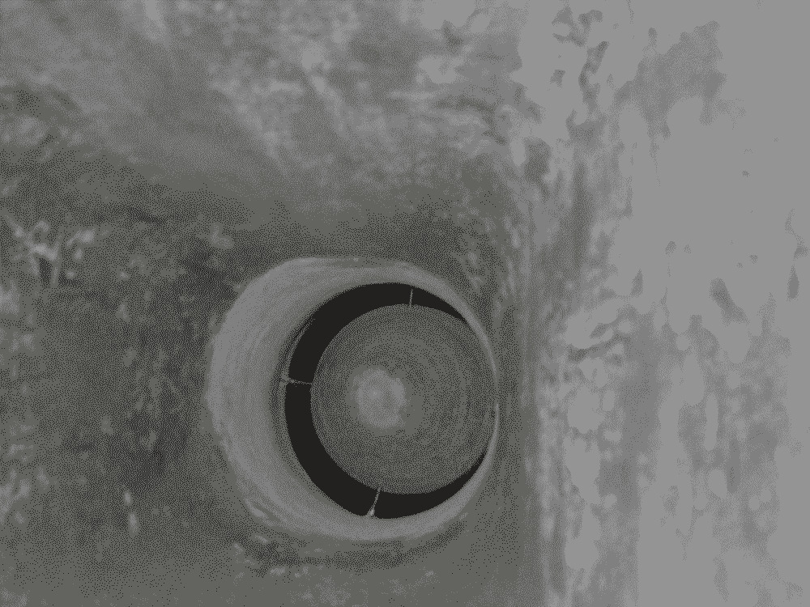
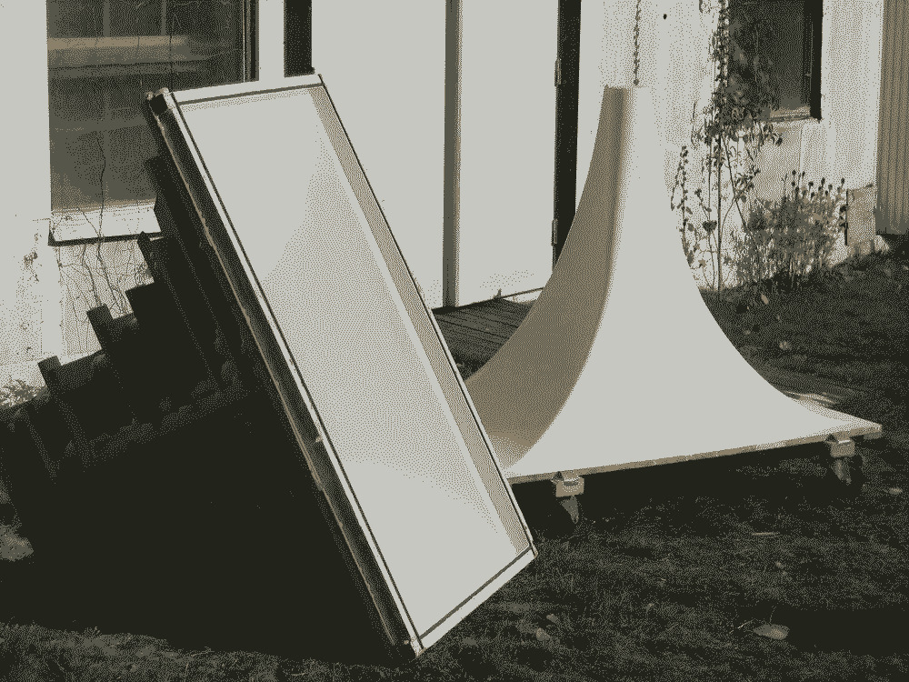
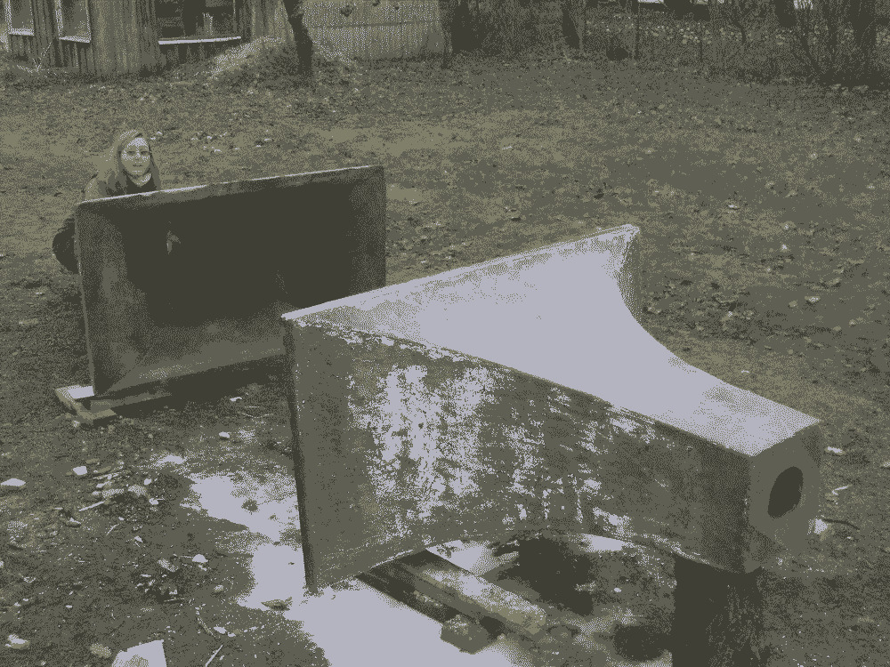
The other diy Tractrix horn (without a phase plug) I'm interested is talked about in my last post here, below.
Another crazy speaker I came across online recently are these backwards open baffle speakers Ricardo Villalobos has in his studio in If I Think Of Germany At Night by Reflector Audio , 218Q. 4 18in drivers tilted in 15-25deg to create a beam of bass from the back waves of the speaker driver, with a compression driver in the center. I want to DIY these, theyre so insane. With my DIY projects, I think it will be fun and easy to get a wide frequency response out of my projects but things like room acoustics, phase and amping will be the hard part. How do these speakers not have crazy phase issues and the woofers are just blasting sound backwards? insane. I guess no one wanted them, the site has been down since 2018/2019.
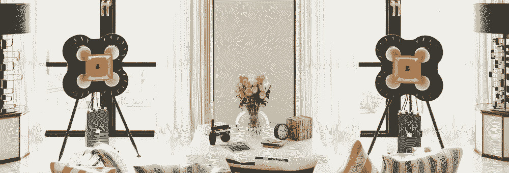
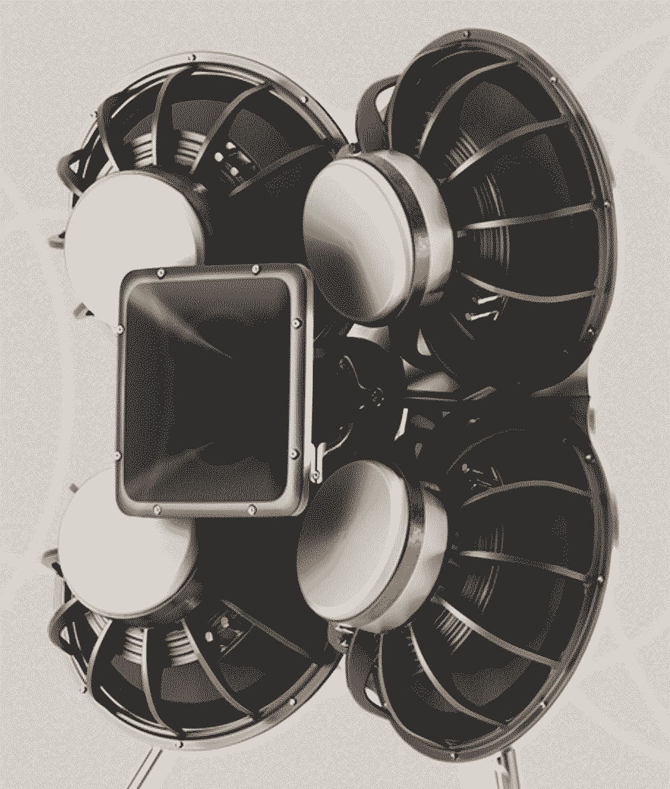
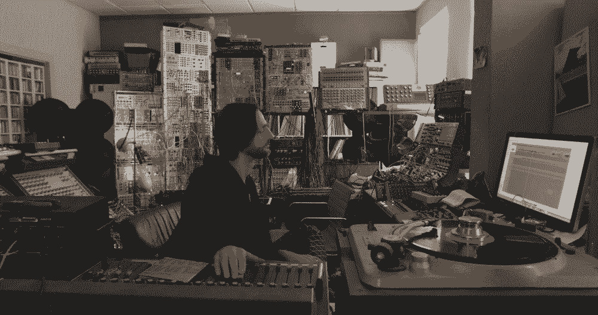
08-18-2025
I'm thinking of building a 3/4 way system with 12-15 inch woofers in a W bin desgin similar to the W bin subwoofers of Altec in the 1940s-1970s for the theatre applications, with these dimentions:
For the ultra low frequencies (anywhere between 20-60hz) I want to tune some transmission line tapped horns with big sub drivers, and pair them togethet to get the same dimentions as the W bin. I havnt chose or done the math for them yet but I plan to sort of wing it, because of my specific dimentions, and just do the math for the length of the horn and size of the driver. Ideally all speakers used in the project are 8ohm, thinking Dayton audio. This is my reference for math for the transmission line horns: "In theory, to achieve maximum efficiency, horn dimension should be 1 wave-length long and 1 wave-length in mouth circumference at the lowest frequency. At 3 octaves higher the wavelengths are 1/10 of horn size and too small for the horn to direct them. These small wave-lengths bounce around inside the horn chaotically. It is essential to rescale a smaller horn for the next 3 octaves. Long horns are for low frequencies. Short horns are for high frequencies. Saxophones Trumpets French horns Tubas Etc obey this rule. There is no such thing in physics as long-throw or short-throw horns. These irresponsible marketing terms loosely refer to horn directivity. Low frequency horns using cone speakers can be 1/2 but not less than 1/4 wave-length at the lowest frequency, with reduced efficiency. 40Hz wave-length is 8m / 24ft It is not practical to make a bass horn this size so the horn is shortened (truncated) to 1/4 wavelength 2m / 6ft. Bass bin horns can be folded to control size. Made in sections and grouped to form a single bin."
For the midrange horns I want to load a mid range 12-15in driver in the style of Altec a7 VOT speakers or A1. Aiming for Tractrix style horns with 2 or 4 sided from the driver. This is my build reference for them: "You might ask why this guy used the Tractrix contour for his midbass, where everybody knows, that a horn of such geometry runs out of gas way before reaching fs. You’re right it’s true. However, my idea was to design a horn which should sound wise match the Tractrix midrange as good as possible. That’s why I decided to use Tractrix instead of a hyperbolic (m<1) or exponential (m=1) contour. Actually, in my room, these horns measure 140Hz to 700Hz within a range of ± 2dB. Below 140Hz these horns rolls off with approx 12dB/oct."
For the high frequencies I want to design exponential horns for a compression driver or two, 3D printed or lathe cut. OR try and diy the classic altec acoustic lens. OR i try to do some 3d printing/Rhino designs for a multicellular/sectoral horn like Altec's 1505, 1005 and 805 A and B, most likely B so it can be modular, easier to print that way.
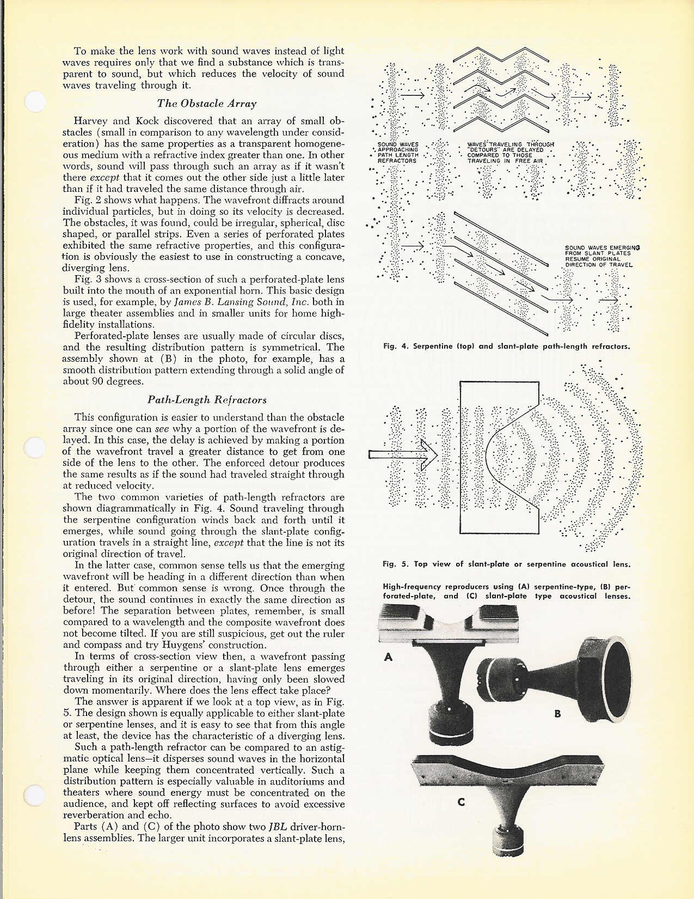
08-18-2025
Recently I had the idea to make a reflex loudspeaker out of a compression driver I found, random parts and a traffic cone. The horn boosted the low end response of the compression driver while taking away some high frequencies. The horn also made the driver way more efficient (It gets a lot louder without needing to push the gain nearly as much. The horn is also a lamp! Here are some pics from my experiments. The large cone is the finished one with the compression driver attached. I want to use this for mid range in a 3 way speaker system. Maybe along with a horn loaded subwoofer and piezo tweeter, or smaller diaphragm compression driver tweeter attached to an exponential horn.
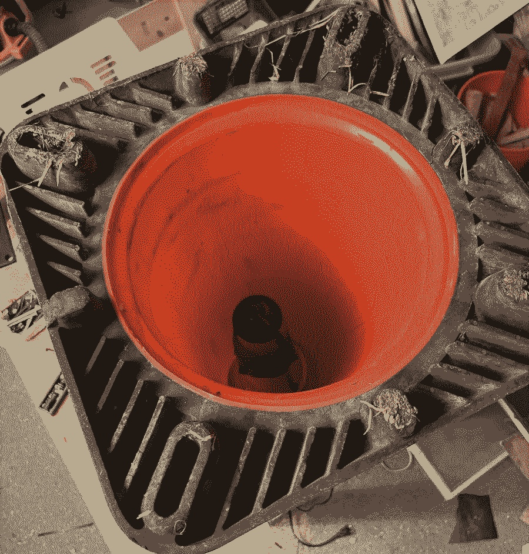
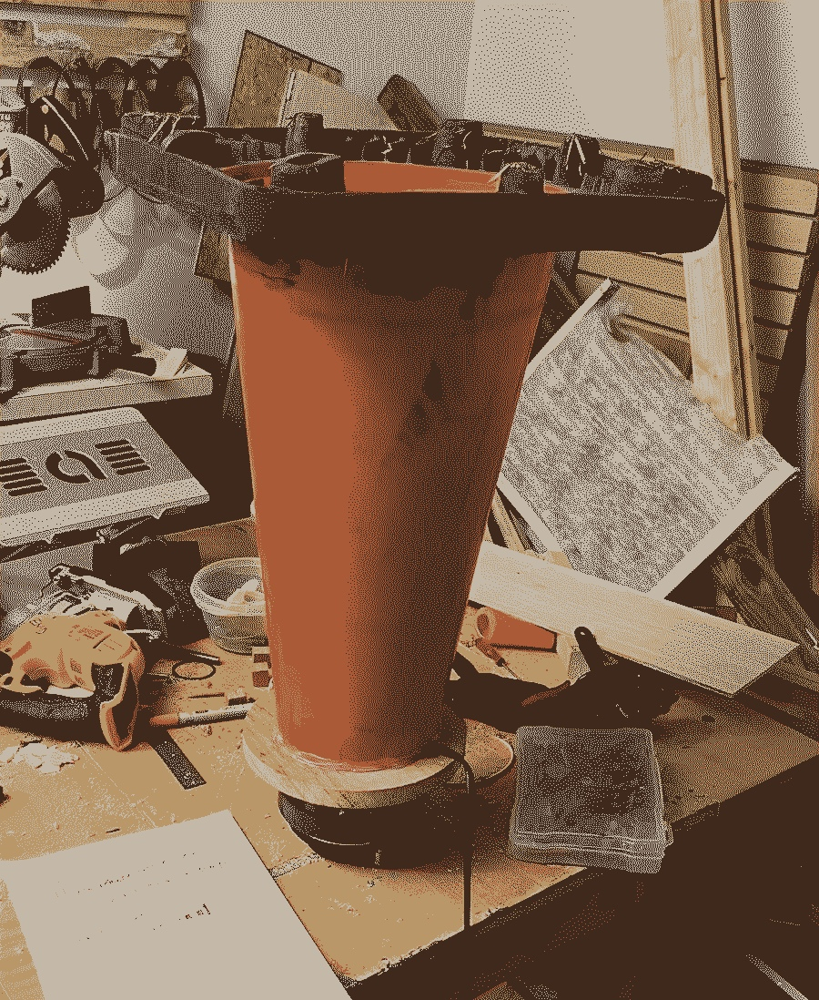
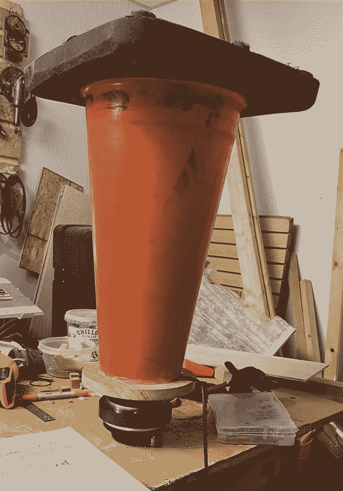
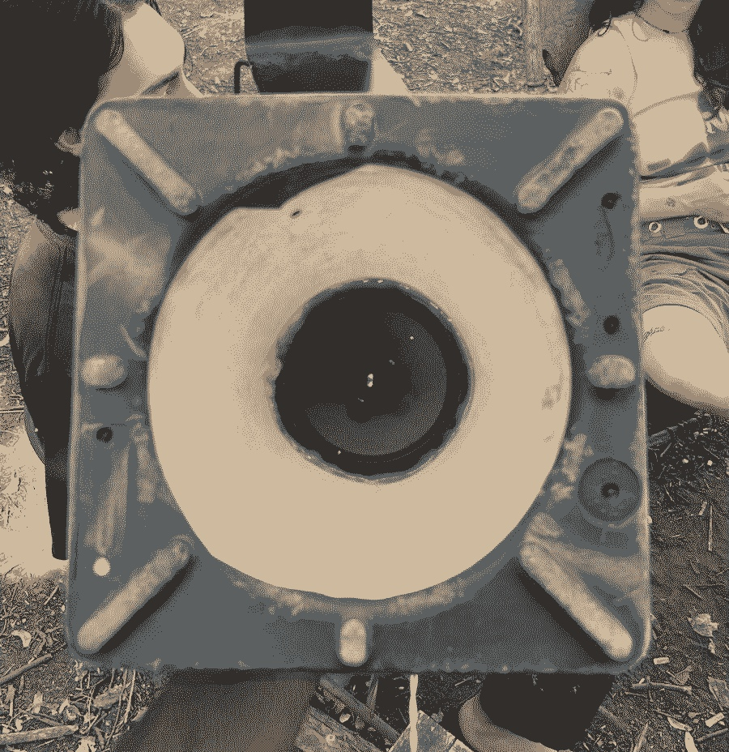